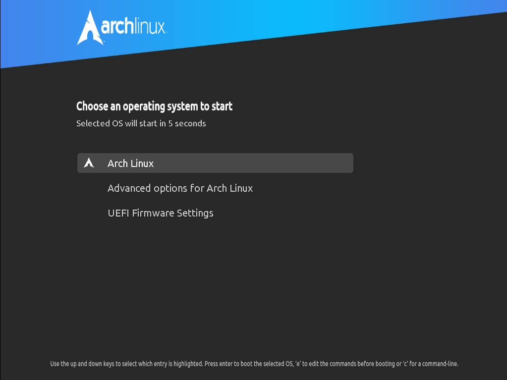
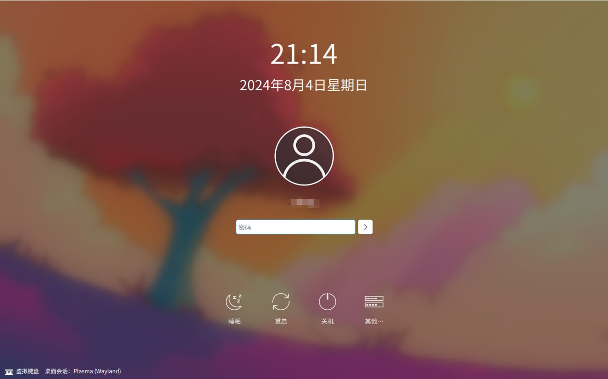
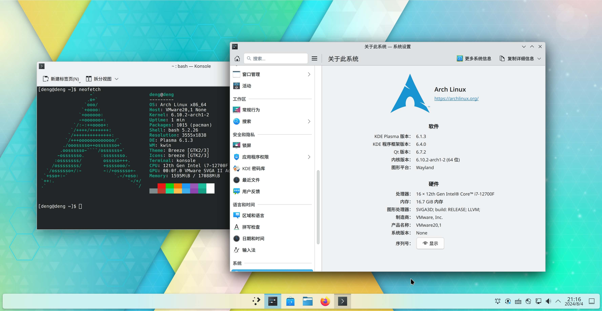
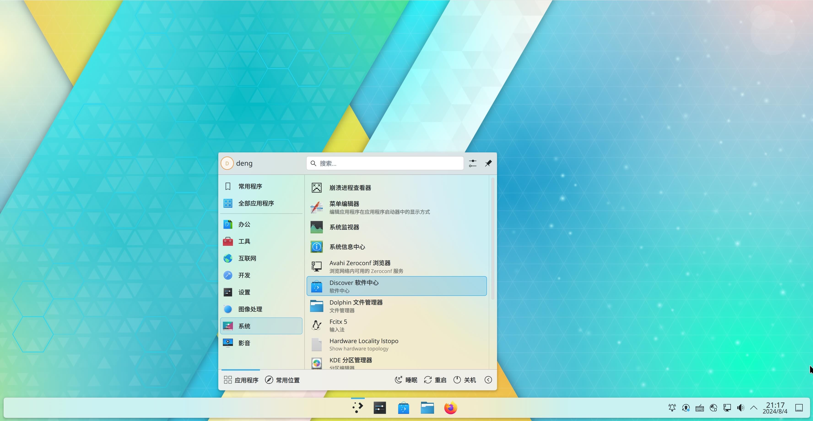

MeArch 是什么？
MeArch 是基于 Arch Linux 的滚动(发行版)系统，它有一个 KDE Plasma 桌面环境，可以使用图形化界面来简易的安装 Arch 系统。
MeArch 有哪些特性？
- 基于 Arch Linux ，提供开箱即用的桌面环境
- 简单友好的安装向导，无需繁琐的命令行，点点鼠标即可安装到你的电脑
- 无冗余软件，只附加最低的基础软件，满足定制化需求
- 不篡改发行版 ID，安装到你电脑上的是 Arch Linux !
- 一切（系统、组件和软件）都是滚动更新的
- 专注于 KDE Plasma 桌面和软件
- 专注于 Wayland
- 特定国家和地区特殊优化，以更好适应用户习惯
- Nvidia 专用驱动 HOOK (Beta)
MeArch 截图




支持